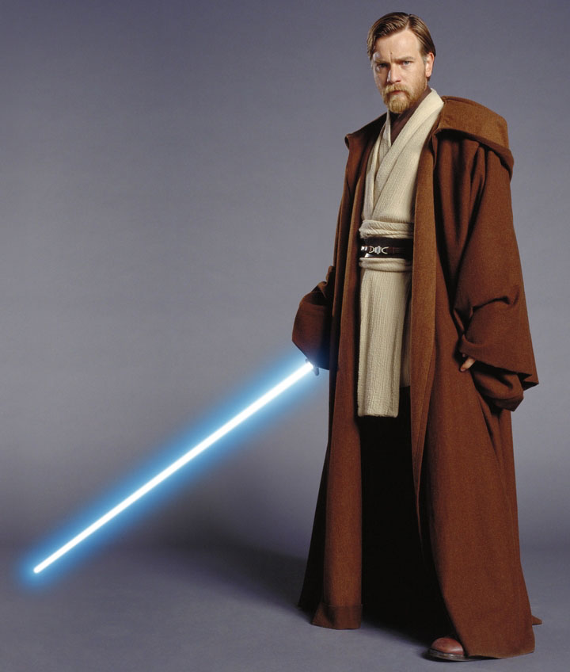

Obi-Wan Kenobi, also known as Ben Kenobi during his exile, was a legendary Jedi Master who played a significant role in the fate of the galaxy during the waning days of the Galactic Republic. He was the mentor of both Anakin and Luke Skywalker, training both in the ways of the Force. He had a long and tumultuous career that helped shape the fate of the entire galaxy.
Born in 57 BBY on Stewjon, Kenobi was taken as the Jedi apprentice of Qui-Gon Jinn and traveled on many missions with him. During the Invasion of Naboo, Kenobi became the first Jedi in approximately 1,000 years to defeat a Sith Lord in combat when he defeated Darth Maul during the Battle of Naboo, yet lost his master in the same duel.
Kenobi fought during many battles of the Clone Wars, and was one of the last members of the Jedi High Council. Even after his apprentice became a Jedi Knight, Kenobi and Skywalker fought together many times, becoming a widely renowned pair. During the war, an old enemy returned to haunt Kenobi: Darth Maul, the murderer of Qui-Gon Jinn. With aid of his brother, Savage Opress, the revived Sith Lord went to create a criminal empire, all the while plotting revenge on his most despised adversary. Kenobi clashed blades with Maul on occasion across the galaxy. He was devastated as Maul slew the Jedi's past love interest, Duchess Satine Kryze of Mandalore, in cold blood, yet remained strong throughout the conflict. Later in the war, Skywalker saved his life in a battle fought over Coruscant, after which Kenobi killed General Grievous on Utapau. However, he was soon betrayed, as Commander Cody, following Order 66, opened fire on him.
Kenobi met up with his old mentor Grand Master Yoda, and the two realized that not many Jedi had survived the attacks. The two returned to the Jedi Temple, where they learned the agonizing truth: Skywalker, now lost to the dark side of the Force, had led an attack to kill all Jedi remaining in the Jedi Temple, following orders from Chancellor Palpatine, the ruler of the successor of the Republic, the Galactic Empire. Kenobi traveled to Mustafar in order to duel his former apprentice and friend, now the Sith Lord Darth Vader. Finally, Vader was taken in by a storm of lava, and Kenobi remorsefully left him to die. While Yoda, one of the few other Jedi to survive the Great Jedi Purge, went into exile, Kenobi took the son of Skywalker and Amidala, Luke Skywalker, to live with the Lars family on Tatooine. He became a friend of the young Skywalker as he grew up, but he did not tell Skywalker his actual identity.

Kenobi re-emerged in 0 BBY, shortly before the Battle of Yavin. After Leia Organa, Vader's daughter and Luke Skywalker's twin sister, was captured by the Empire, she contacted him desperately. Kenobi gave Luke his father's lightsaber and traveled with him to Alderaan in Han Solo's Millennium Falcon, only to realize that the Death Star had destroyed the planet. Kenobi entered the Death Star with Luke, Han, Chewbacca, C-3PO, and R2-D2, in order to rescue Organa, but Darth Vader sensed his presence. In a duel with his former apprentice, Kenobi gave up his life to allow Luke to escape, vanishing into the Force the moment Vader struck him down with his weapon. Three years later, his spirit returned to Luke to lead him to Dagobah in order to learn from Master Yoda. He even carried out his role as a mentor to the younger Jedi beyond his natural life through use of the Force, remaining a significant influence on Luke Skywalker's foundation of the New Jedi Order.